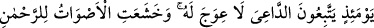
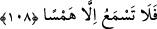
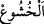

108. O gün insanlar, dâvetçiye (İsrafil’e) uyacaklar. Ona karşı yan çizmek
yoktur. Artık, çok esirgeyici Allah hürmetine sesler kısılmıştır. Bu yüzden, fısıltıdan
başka bir ses işitemezsin.
“O gün,” yani dağların ufalanıp savrulduğu günde “İnsanlar, dâvetçiye” kendilerini
mevkıfte (durup bekleme yerinde) ve mahşerde toplanmaya çağıran İsrafil’e
“uyacaklar.” İsrâfil (a.s.) ikinci defa sûra üflemesi sırasında Beytü’l-makdis’teki taşa
çıkar ve şöyle der: “Ey çürümüş kemikler, darmadağın olmuş mafsallar ve parçalanmış
etler! Haydi Rahman’a arzolunmak üzere kalkın!” İşte bu çağrıya muhatap olan herkes,
her bir taraftan ona doğru koşarlar. İster istemez bu dâvete icâbet ederler ve
toplanılması istenen yöne giderler. Çünkü “Ona karşı yan çizmek yoktur.” O çağrıdan
hiç bir sûretle sapma imkânı yoktur. Çağrılan herkes, İsrafil’in sesini tâkip ederek
sapmadan o yöne gider. Çünkü yeryüzünde onları eğri büğrü gitmeye zorlayacak ve eşit
olarak sesin ulaşmasını engelleyecek bir şey yoktur.
“Artık, çok esirgeyici Allah hürmetine sesler kısılmıştır.” O günkü korkunun
şiddetinden sesler kısılmış ve O’nun heybetine olan saygıdan konuşmalar fısıltıya
dönüşmüştür. “el-Huşû” boyun eğme/itâat etme, alçak gönüllülük ve sükûnet demektir.
Ya da ‘huşû’ seste ve gözde ‘hudû’ ise bedende olur. el-Müfredât’da şöyle der: “
boyun eğmek/itâat etmek demektir. Çoğunlukla âzâlarda olan durumu anlatmak için
kullanılır. “ed-Darâa” ise çoğunlukla kalbde olan durumu anlatmak için kullanılır. Onun
için rivâyete göre “Kalb tazarru ettiği zaman âzâlar da huşû içinde olur”[102]
buyrulmuştur.
“Bu yüzden, fısıltıdan” gizli sesten “başka bir ses işitemezsin.” Kâşifî der ki: “Yâni
sen o günde çok hafif bir sesten, yâni onların mahşere doğru giden ayaklarının sesinden
başka bir ses işitmezsin.”
İmam Gazzâlî ed-Dürratü’l-Fâhira’da şöyle der: “İsrâfil (a.s.) birinci sûra
üflediğinde dağlar havaya uçuşur, nehirler birbirine karışır, gökyüzü sularla kapanır,
yıldızlar darmadağın olur, göklerin ve yerin düzeni bozulur, bütün âlemler ölür, yer ve
gök bomboş kalır. Sonra Hak Teâlâ cehennemin sakar tabakasından bir ev açar. Oradan
ateşten bir alev çıkar. Bu alev, denizleri tutuşturur, yakıp kavurur. Böylece yeryüzü,
kokuşmuş siyah balçık gibi kupkuru kalır. Gökyüzü de sanki zeytin posası ve eritilmiş
bakır gibi olur.
Allah Teâlâ, Arş’ın hazînelerinden bir hazîne açar. Onda hayat denizi vardır. Oradan
yere -erkeğin menisi gibi- bir yağmur yağdırır. Böylece bedenler (ölürken bulundukları
hal üzere) yerden biterler. Çocuklar çocuk, ihtiyarlar ihtiyar olarak ve orta yaşlılar
bulundukları yaşta diriltilirler. Sonra Arş’ın altından latîf bir rüzgar eser. Yeryüzü
üzerinde ne bir dağ, ne bir tepe, ne de eğrilik olmadığı halde görünür.